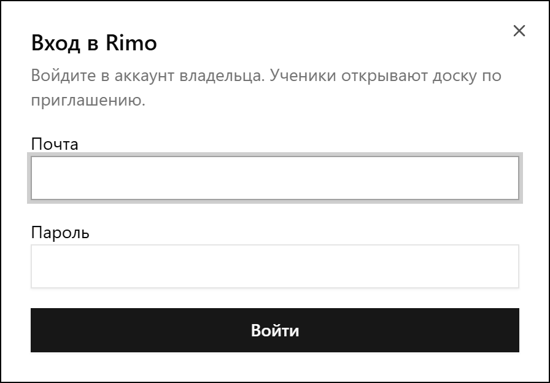
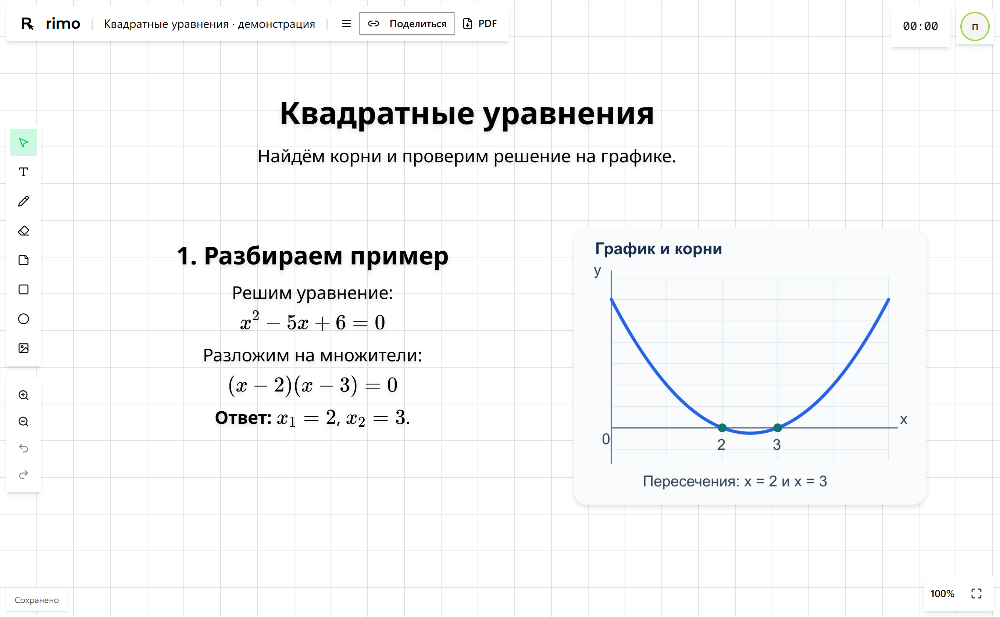
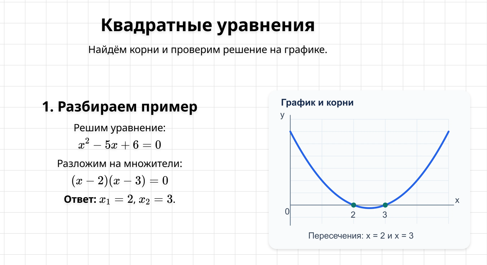
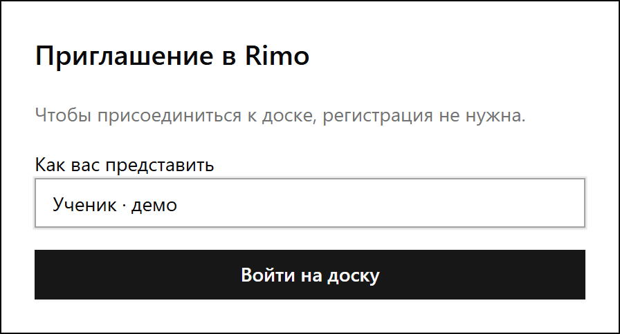
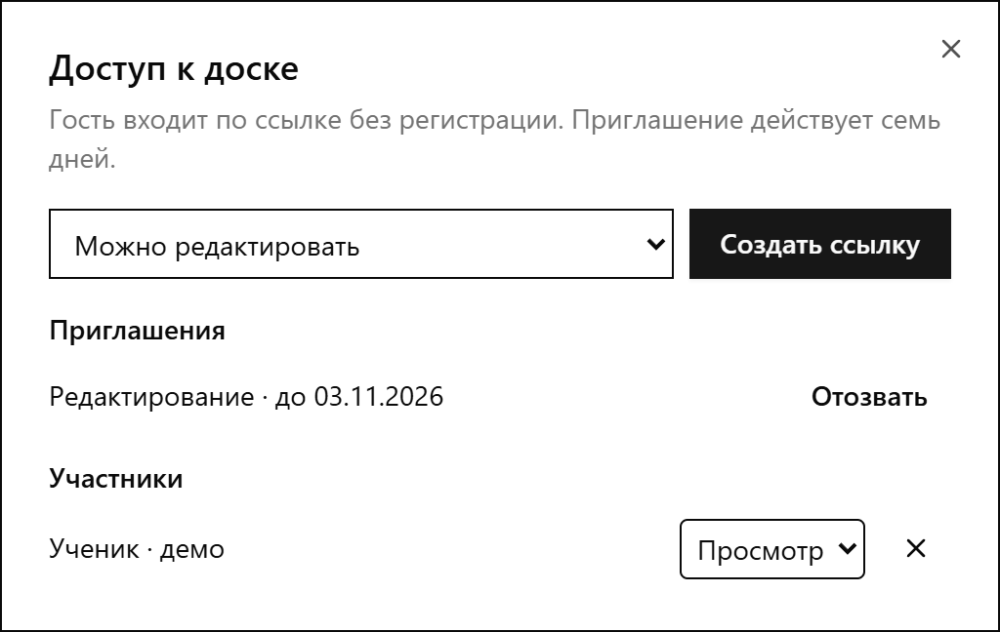
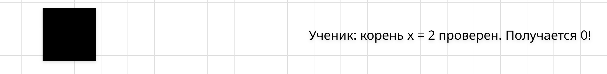
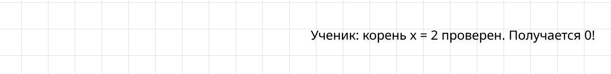
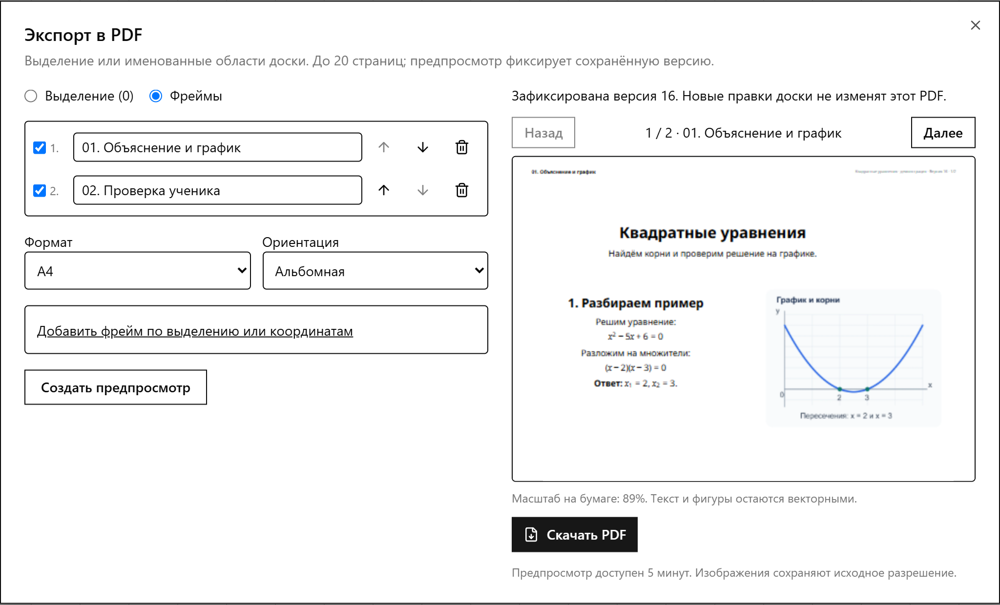
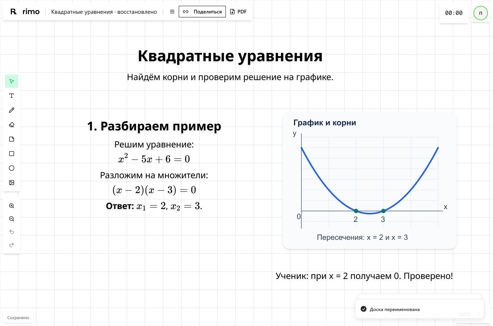

Владелец
Входит по почте и паролю, создаёт доски и управляет материалами.

Учебная доска уже позволяет подготовить материал, поработать с учеником и сохранить результат занятия.

Текст, формулы, изображения, рисунки и страницы находятся на одной доске.
Ученик входит по приглашению. Владелец управляет доступом и сохраняет материалы.
Сервис работает на локальном стенде. Разработка, строгая нагрузочная приёмка и подготовка внешнего запуска продолжаются.
Можно объяснить правило, записать решение и сразу сопоставить его с изображением или рисунком.

Заголовки, выделение и списки помогают построить объяснение и сохранить конспект.
Формулы выглядят как в учебнике и остаются частью редактируемого материала.
Можно добавить картинку, рисовать от руки, использовать фигуры и стикеры.
Доски и файлы сохраняются на стороне сервиса. В демонстрации текст, формулы и график сохранились после перезагрузки.
Польза для владельца: материал можно готовить заранее и продолжать на следующем занятии.
Владелец использует свой аккаунт. Ученику достаточно приглашения и выбранного имени.
Входит по почте и паролю, создаёт доски и управляет материалами.

Открывает приглашение и указывает имя. Отдельная регистрация не нужна.

Польза для занятия: преподаватель готовит доску, а ученик подключается к нужному уроку по приглашению.
Редактор может менять доску, зритель - наблюдать. Владелец меняет роль и отзывает доступ. В демонстрации смена роли сработала без перезагрузки.

Владелец добавил прямоугольник и отменил его. Независимый ответ ученика остался на доске.
До отмены

После отмены

Оба участника работали с одной настоящей доской. Отзыв доступа также проверен: гость получил сообщение о прекращении доступа.
Именованные области доски становятся страницами. Можно выбрать порядок, формат и проверить результат перед скачиванием.

Собрать нужные области доски и задать их порядок.
Убедиться, что материал помещается на бумаге.
Отправить конспект или распечатать раздатку.
В этой демонстрации скачан PDF из двух страниц без предупреждений об обрезке. Русский текст и ответ ученика проверены извлечением текста.
В ранее принятом отдельном испытании PDF также создавались во время совместной работы: 20 экспортов по 20 страниц. Это результат протокола проверок, а не новый нагрузочный прогон для отчёта.
Переносимый архив .rimo возвращает материал в редактируемую доску, включая изображения, формулы и порядок страниц.

Владелец скачивает .rimo и открывает его как новую доску. Архив содержит служебную историю изменений; стек кнопки «Отменить» старой сессии не восстанавливается.
По протоколу проверено восстановление базы, файлов и прежнего входа в чистое локальное окружение.
Ещё требуется: внешнее зашифрованное хранилище, расписание копий и проверка восстановления из него. Внешняя резервная копия пока не настроена.
Текущий код прошёл полный GitHub Actions: сборку, тесты, PDF и основные действия в браузере. Результаты нагрузочной проверки приведены отдельно.
Вход, доски, гости, совместная работа, роли, PDF и архивы проверены в настоящем браузере.
Перезагрузка, переносимый архив и полное локальное восстановление проверены. Внешнее хранение копий остаётся открытым.
Часовой профиль не принят. На двух виртуальных ядрах попытка остановилась через 47 мин 55 с из-за очереди сообщений. Сервис восстановлен.
В 3 из 20 повторов реакция превысила 50 мс; максимум 59,4 мс. Плавность и отмена перемещения прошли, строгий предел реакции пока не выполнен.
Для вспомогательных Node-клиентов p95 доставки 336 мс выше предела 300 мс. Браузерный критерий и сохранность прошли; весь профиль не принят.
p95 - граница, в которую укладываются 95% измерений. Текущая экспериментальная настройка памяти не принята как окончательная.
Пилотный предел одной доски сейчас 5 МиБ, включая историю. Повышение предела также требует проверки.
Настоящий VPS, публичный домен и внешнее хранилище резервных копий пока не подключены.
Пройти полный час 50/10 и подтвердить строгие пределы задержки на принятой конфигурации.
Развернуть сервис, включить HTTPS и проверить совместную работу в публичном окружении.
Настроить хранилище и расписание, затем проверить восстановление из внешней копии.
Собрать замечания владельца и учеников, устранить проблемы реального использования.
Утвердить оператора, аудиторию, размещение и сроки хранения; завершить документы, запись их принятия и процедуры работы с данными.
Это внутренние материалы с незаполненными реквизитами. Они не являются действующими документами и не подтверждают соответствие сервиса требованиям.
Открыть 16 вопросов владельцу
plan/legal-questions-2026-10-27.md
Разработка сохранена в ветке codex/service-rework и продолжается.